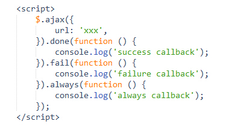
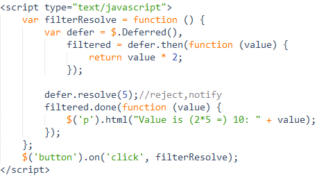
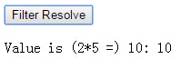
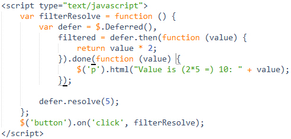
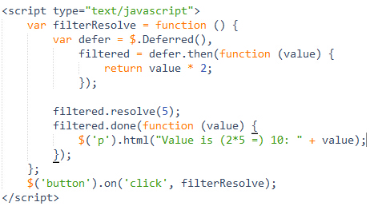
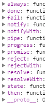
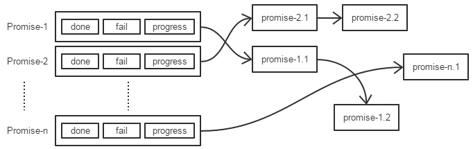

want to know more Promises/A+?
引言
fn1(); fn1是一个耗时任务, fn2等待fn1的执行结果...
fn2();
function fn1(callback) { 同步变异步
// fn1业务逻辑 fn1不阻塞程序运行
setTimeout(function () {
callback();
}, 1000);
}
eg: AIO用这种方式增加了容错
console.log(1);
setTimeout(function () {
console.log(2);
}, 0);
console.log(3);

优点：容易理解。
缺点：不利于代码的阅读和维护，各个部分耦合度高，使得程序结构混乱、流程难以追踪。
为了改善JS异步编程, Promises应运而生...
Promises
是一种规范，目的是为异步编程提供统一接口。
异步任务返回一个promise对象，promise有三种状态：未完成（pending）、已完成（fulfilled）、失败（rejected）。
状态变化有两种，且只能发生一次。分别是从“未完成”到“已完成”，或者从“未完成”到“失败”。一旦状态变为“完成”或“失败”，就不会在发生变化了。
then方法用来添加回调函数。接受两个回调函数，第一个是操作成功（fulfilled）的回调，第二个是操作失败（rejected）的回调。一旦状态改变，就调用相应函数。
详情见：
英文：https://promisesaplus.com/
中文：http://www.ituring.com.cn/article/66566/
jQuery从1.5版本以后，参照此规范(非完全)，结合自己的模块有了自己的实现。
jQuery promise
传统写法：

Promises写法：

从上面代码可以看出，采用Promises接口之后，程序流程变得清晰易懂。
传统回调函数写法会使得代码混成一团，变得横向发展而不是向下发展。
方法简介




why?
Promise是一个被屏蔽掉了(resolve, reject, notify, resolveWith, rejectWith, 和 notifyWith)方法的Deferred对象。Promise对象就是不能改变状态的Deferred对象，也就是Deferred的只读版。


链式结构
